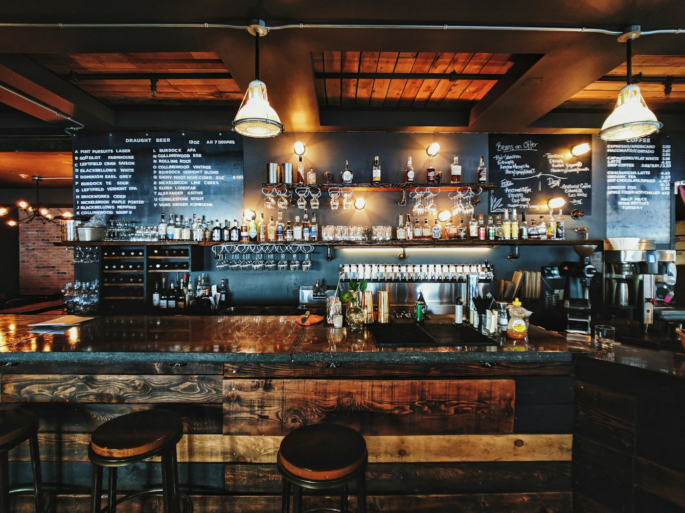
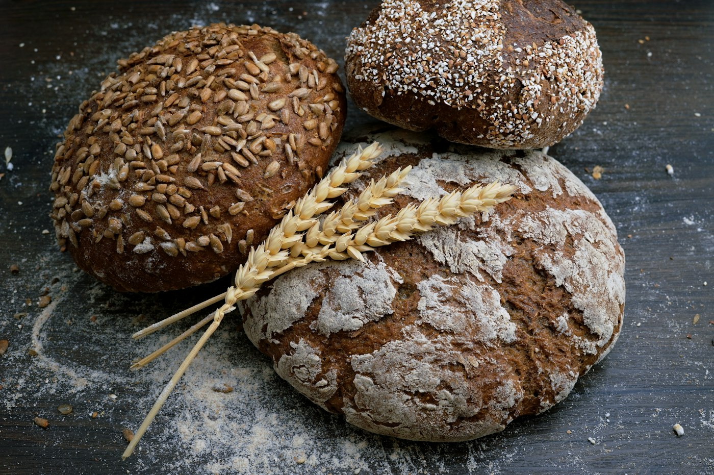
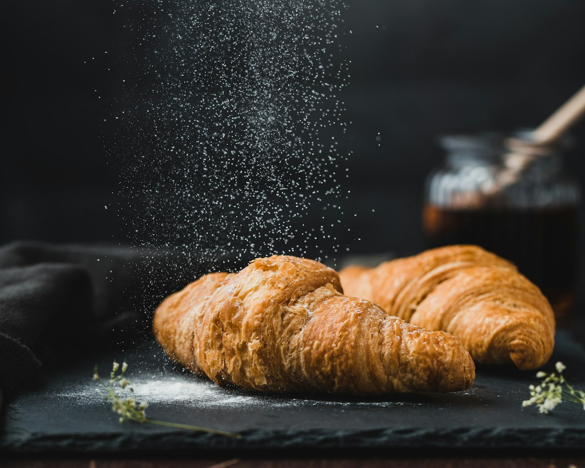
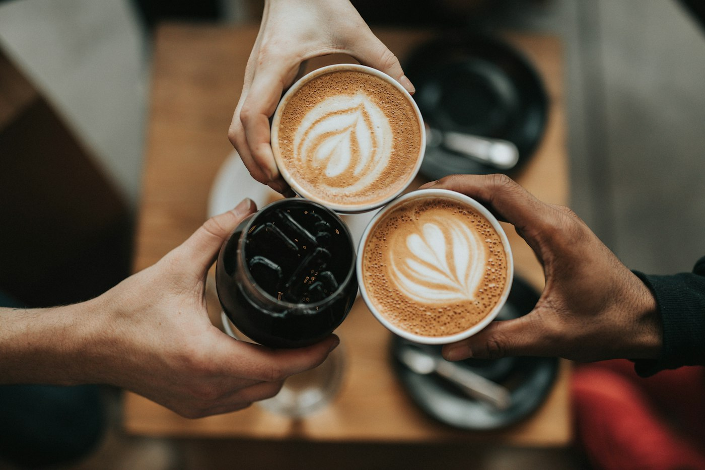
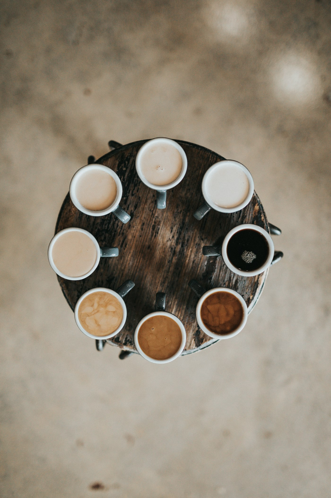

Сьогодні на дошці
Пишемо крейдою щоранку о сьомій. Якщо є на дошці — є насправді.
-
Житній на заквасці
68 грнЗалишилось 4 буханки. Останню забирають до дев'ятої.
-
Булочка з корицею
48 грнВийшла з печі о 7:40. Ще тепла, поки ви це читаєте.
-
Сирники з чорницею
118 грнДо 12:00, далі кухня переставляється на вечір.
-
Фільтр, Ефіопія
38 грнСьогоднішнє зерно: Іргачефф, мита обробка. Чорнослив і какао.
Фото дошки викладаємо в Instagram щодня о 07:15.
Зала і кухня
Нічого не поставлено. Знято у звичайні будні, нашими ж людьми.






Про це місце
Чотири людини, одна піч і підвал, що пахне кавою цілий рік.
Почалося з однієї печі, позиченої в друга за два квартали. Пекли сорок буханок на неділю й розбирали до обіду, а другого місяця стало ясно: самим хлібом оренду не закрити. Кава була очевидним продовженням — хто купує теплий хліб о восьмій, той хоче чимось його запити.
Обсмажувач з'явився пізніше і виявився найкращим нашим рішенням. Мішок на дванадцять кілограмів іде за три дні, тож зерно у вашій чашці було зеленим менше тижня тому. І ми одразу чуємо, коли лот невдалий, — бо смажили його самі.
Ми не намагаємося бути найлюднішим місцем у центрі. Половину столиків щоранку займають одні й ті самі шестеро — і нас це влаштовує.
«Якщо о четвертій пополудні хліб ще теплий — значить, вранці щось пішло не так».
На літо беремо ще двох людей і одного нічного пекаря. Якщо це про вас — напишіть на номер нижче.
Як нас знайти
Між аптекою та взуттєвим ремонтом. Зелені двері, увечері без вивіски.
- Адреса
- Ваша адреса
- Телефон
- +0 000 000
- Ще є Viber
- +0 000 000
- Ваш акаунт
- Передзамовлення
- Подзвоніть до 17:00 — хліб відкладемо в бік.
перевіряємо…
- Понеділок — четвер08:00 — 21:00
- П'ятниця — субота08:00 — 23:00
- Неділя09:00 — 20:00
Кухня приймає замовлення за півгодини до закриття. Базарного дня терасу заповнюють до десятої — столики всередині звільняються близько другої.